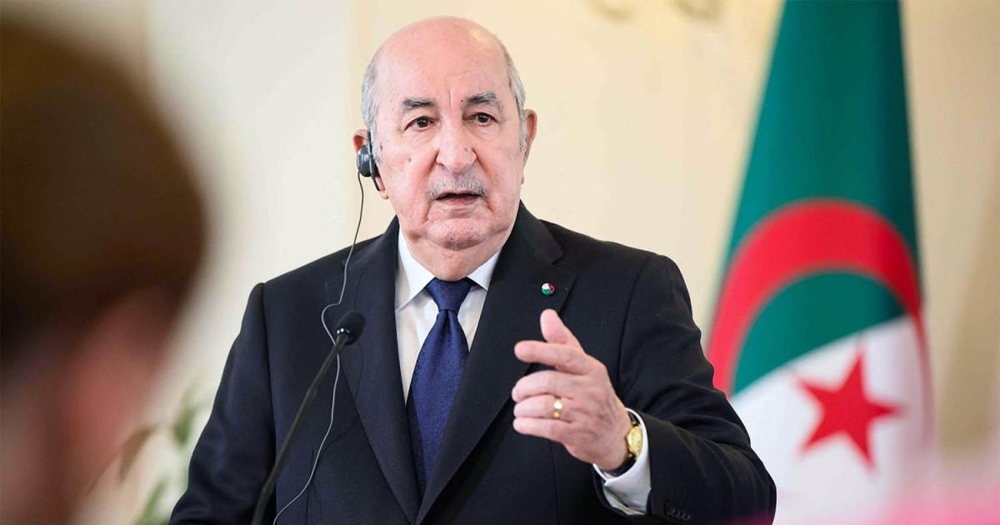
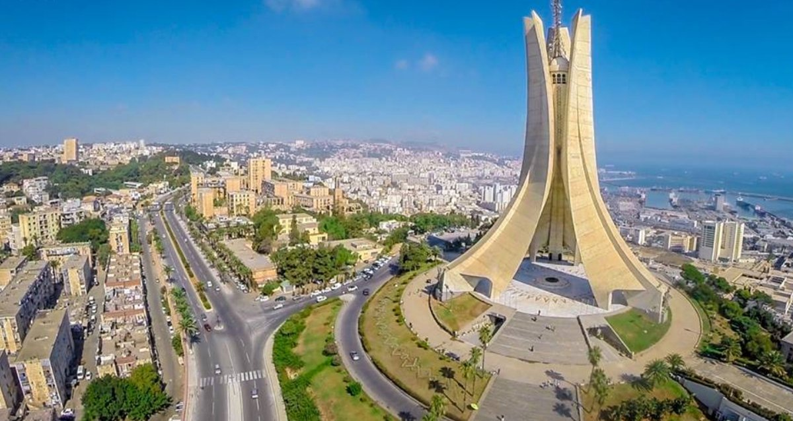

Contents
- About Algeria
- Cities in Algeria
- Cultures of Algeria
- Facts about Algeria
- National anthem
- Explore More
.webp)
Current Prime Minister
SIFI GHRIEB
Capital city
ALGIERSAbout Algeria
Algeria is the largest country in Africa, located in North Africa along the Mediterranean Sea. It shares borders with several countries, including Tunisia, Libya, Niger, Mali, Mauritania, Morocco, and Western Sahara. The capital city is Algiers, which is also the country’s main economic and cultural center.
Algeria has a rich history influenced by many civilizations, including the Berbers, Romans, and Arabs. It was later colonized by France and gained independence in 1962 after a long struggle. Today, Algeria is a republic with Arabic and Berber (Amazigh) as its official languages.
The country has diverse landscapes, from the fertile coastal plains to the vast Sahara Desert, which covers most of its territory. Algeria is rich in natural resources, especially oil and natural gas, which play a major role in its economy.
Culturally, Algeria is known for its traditional music, food, and festivals. Popular dishes include couscous and various meat stews. Religion also plays an important role, with Islam being the dominant faith.

- Algiers
- The capital and largest city, located on the Mediterranean coast.
- Oran
- A major port city known for music and culture.
- Blida
- Known for agriculture and natural beauty.
- Tlemcen
- Rich in Islamic architecture and history.
- Setif
- A growing economic center.
Cultures of Algeria
Algeria has a rich and diverse culture shaped by a long history and the influence of Berber (Amazigh), Arab, and Mediterranean traditions. The population is mainly made up of Arab and Berber communities, each contributing to the country's unique cultural identity.
Religion plays an important role in daily life, with Islam being the dominant faith. Religious practices and celebrations are widely observed and are an important part of social and cultural traditions.
Traditional clothing reflects Algeria's heritage. Men often wear garments like the gandoura, while women may wear traditional dresses such as the karakou or haik, especially during special occasions and celebrations.
Algerian cuisine is well known for its rich flavors and variety. One of the most popular dishes is couscous, often served with vegetables and meat. Other traditional foods include tagine and various types of bread.
Music and dance are also key parts of Algerian culture. Popular music styles include Rai, Chaabi, and Andalusian music, each with its own history and regional influence. Festivals, weddings, and family gatherings are often filled with music and dancing.
.webp)
.webp)
| Fact | Description |
|---|---|
| Largest Country | Algeria is the largest country in Africa by land area. |
| Independence | Algeria gained independence from France in 1962. |
| Capital City | The capital city of Algeria is Algiers |
| Religion | Islam is the main religion in Algeria. |
| Sahara Desert | Most of Algeria is covered by the Sahara Desert. |
| Natural Resources | Algeria is rich in oil and natural gas. |
| Population | The population is over 40 million people. |
| Traditional Food | Traditional food includes couscous and tagine. |